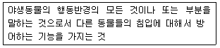
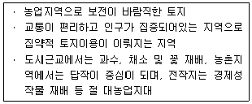
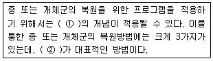
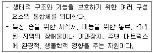
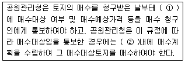
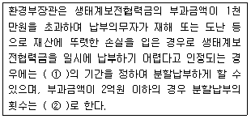
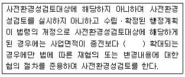
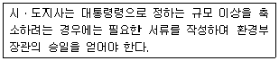

자연생태복원기사(구) (2010-07-25 기출문제)
1과목: 환경생태학개론
1. 다음이 설명하는 것은?

- 생태적 지위
- 산란처
- 은신처
- 세력권
(정답률: 83%)

2. 조류(algae) 집단발생의 원인을 잘못 설명한 것은?
- 축산폐수 등의 유입으로 유기물이 증가했을 때
- 기온이 저하되어 수온이 낮아졌을 때
- 영양이 충분히 공급되는 호수에서 봄, 가을 전체 수층의 상하 혼합 시 자연발생
- 물리적, 화학적 요인에 의한 영양경쟁조건이 좋아졌을 때
(정답률: 74%)
3. 조간대 생물이 고온에 견디기 위해 주위로부터 흡수되는 열을 줄이거나 흡수된 열을 몸에서 방출하는 방법으로 옳지 않는 것은?
- 표면적을 최소화 하여 열의 흡수를 적게 한다.
- 어두운 색의 패각을 가져 열의 흡수를 적게 한다.
- 패각에 굴곡을 많이 가져 열을 방출한다.
- 증발을 통해 열을 방출한다.
(정답률: 58%)
4. 최초의 원시 생물체에서 지금과 같은 다양한 종이 분화 되어 오면서 각 종은 고유의 특별한 서식처를 점유하게 되었다. 이와 같이 종이 서식하는 범위를 나타내는 기본 개념은?
- 먹이망(food web)
- 순 일차생산력(net primary productivity)
- 동화효율(assimilation efficiency)
- 생태적 지위(ecological niche)
(정답률: 100%)
5. 생태계 구성요소의 생물적 요소인 분해자에 속하는 생물은?
- 시안세균(Cyanobacteria)
- 조류(Algae)
- 진균류(Fungi)
- 동물(Animal)
(정답률: 73%)
6. 같은 분류군에 속하는 동물 중에서 더운 지방에 서식하는 종은 일반적으로 체구가 작고, 추운 지방에서 서식하는 종은 체구가 크다는 법칙은?
- Bergmann의 법칙
- Liebig의 법칙
- All'ee의 법칙
- Shelford의 법칙
(정답률: 알수없음)
7. 생태계내에서 A 생물종과 B 생물종간의 상호 작용이 일어난다면, 두 생물종 중 하나는 이익이 되고 또 다른 하나는 불이익이 되는 상호 작용들로만 짝지어진 것은?
- 포식, 기생
- 편리공생, 상리공생
- 경쟁, 포식
- 기생, 편리공생
(정답률: 알수없음)
8. 종에 대한 예측이 불가능하고, 급변하는 환경에서 서식하는 경향이 있는 종을 무엇이라 하는가?
- 깃대종(flagship species)
- 기회종(opportunistic species)
- 핵심종(keystone species)
- 개척종(pioneet species)
(정답률: 70%)
9. 육상개발과 관련하여 해양으로 유입된 토사가 연안생태계에 미치는 피해에 해당되지 않는 것은?
- 식물의 1차생산력 증가
- 동물의 질식
- 독성물질의 증가
- 저서동물군의 구조변화
(정답률: 알수없음)
10. 생태계 내의 질소순환(Nitrogen Cycle)에서 생산자들이 질소를 이용할 때의 형태는?
- NO3-
- N2O
- N2
- NH4+
(정답률: 77%)
11. 다음 중 생물다양성 협약과 가장 거리가 먼 설명은?
- 생물다양성 보전과 지속적 이용을 위한 정책
- 유전자원 및 자연서식지 보호를 위한 전략
- 생태계 내에서 생물종 다양성의 역할과 보존에 관한 기술 개발
- 생물공학에 의해 변형된 생명체(GMO)의 안전한 개발을 위한 지속적 지원
(정답률: 80%)
12. 다음은 호수의 수질개선을 위한 생태 기술로 활용할 수 있는 것들이다. 틀린 것은?
- 호수 상류지역의 자연습지를 보호하고, 필요시 인공습지를 조성한다.
- 효율적인 먹이망 시스템을 구축한다.
- 필요시 심층수 폭기 또는 표층수 혼합방법을 활용한다.
- 자연상태로의 보존을 위하여 가급적 인위적 간섭에 의한 수질개선을 촉구한다.
(정답률: 85%)
13. 다음 중 환경호르몬의 특성이 아닌 것은?
- 생체 호르몬처럼 쉽게 분해된다.
- 생체 내에 잔존하며 수년간 지속될 수 있다.
- 생물체의 지방 및 조직에 농축된다.
- 돌연변이, 암 등을 유발하곤 한다.
(정답률: 93%)
14. “아침식사로 먹은 음식물은 몸의 조직을 유지하기 위하여 호흡으로 사용되고 나면 더 이상 사용될 수 없다”는 원칙은 무엇에 해당하는가?
- 열역할 제 1법칙
- 열역학 제 2법칙
- 생물농축법칙
- 생태효율
(정답률: 93%)
15. 광주성에 의한 식물의 분류 중 단일식물이 아닌 것은?
- 담배, 옥수수
- 보리, 밀
- 조, 대마
- 나팔꽃, 코스모스
(정답률: 62%)
16. 다음 지역 중 세계의 열대우림 지역이 아닌 것은?
- 아마존 분지
- 서부 아프리카
- 인도네시아
- 북아메리카
(정답률: 87%)
17. 생태계에서 외부의 변화에도 불구하고 생태계 전체에서의 변동을 억제하는 능력이나 평형상태를 유지하려는 능력을 무엇이라고 하는가?
- 항상성(homeostasis)
- 천이(succession)
- 포식(predation)
- 경쟁(competition)
(정답률: 알수없음)
18. 지하수의 특징에 관한 설명으로 옳지 않은 것은?
- 지표수 보다 경도가 높다.
- 지표수에 비하여 자연ㆍ인위적인 국지조건에 따른 영향이 적다.
- 수온 변동이 적고 심층수의 경우는 연중 항온상태를 유지한다.
- 자정작용의 속도가 느리다.
(정답률: 60%)
19. 질소는 단백질, 핵산 등 세포물질의 중요한 구성 성분이며 대기의 약 79%를 차지하고 있는 물질이다. 다음중 질소를 고정할 수 있는 생명체가 아닌 것은?
- Nostoc과 같은 cyanobacteria
- Rhodospirillum과 같은 광영양 혐기세균
- Desulfovibrio와 같은 편성 혐기성 세균
- Nitrobacter와 같은 질산화 세균
(정답률: 75%)
20. 수분의 순환(hydrological cycle)을 잘못 설명한 것은?
- 수분 순환은 수분 증발을 일으키는 태양에너지에 의해 주도된다.
- 열대림의 경우에는 산림이 강우에 큰 영향을 끼친다.
- 수분의 가장 큰 저장고는 바다이다.
- 수분은 증발산, 강우 및 유수를 통하여 바다와 대기권으로 이동된다.
(정답률: 47%)
2과목: 환경계획학
21. 다음은 토양분류에 따른 토지능력에 대한 특징이다. 몇급지에 해당하는 토지인가?

- 2급지
- 3급지
- 4급지
- 6급지
(정답률: 74%)
22. 생태공원 조성의 기본 이념이 아닌 것은?
- 지속가능성
- 생태적 건전성
- 생물적 단일성
- 인위적 에너지 투입 최소화
(정답률: 85%)
23. 환경친화적인 자연 입지적 토지이용을 위한 세부적인 규제지침은 각 유형별로 “입지규제”, “건축물”, “경관”, “환경” 등으로 제안되고 있다. 다음 중 해당유형과 규제지침이 잘 맞게 설명된 것은?
- 입지규제 : 자연적ㆍ농업적 토지이용에서 도시적 토지 이용으로의 토지전용을 가능하게 해야 한다.
- 건축물 : 지역별 특징을 따라서 건축물의 형태, 재료, 색채 등 외관에 관한 별도의 기준을 마련해야 한다.
- 경관 : 돌출적이고 위압적인 인공경관으로 지역적인 특색을 부각시킨다.
- 환경 : 주변 하천 및 실개천에 수중보를 설치하여 시민들을 위한 친수공간을 극대화 한다.
(정답률: 알수없음)
24. 생태네트워크의 특징이 아닌 것은?
- 생물다양성의 시점이다.
- 광역네트워크의 시점이다.
- 환경복원ㆍ창조의 시점이다.
- 토지경제성의 시점이다.
(정답률: 85%)
25. 생태 네트워크 계획에서 고려할 주요 사항이 아닌 것은?
- 생물의 생식ㆍ생육공간이 되는 녹지의 확보
- 경제효과를 기대할 수 있는 공간구상
- 생물의 생식ㆍ생육공간이 되는 녹지의 생태적 기능의 향상
- 환경학습의 장으로서 녹지 활용
(정답률: 92%)
26. 군락조사 방법 중 식물의 피도와 수도를 조합한 것으로서 브라운-브랑케의 종합피도 측정법에 의한 우점도(優點度)의 기준이 틀린 것은?
- 5 : 조사면적의 3/4 이상을 피복
- 4 : 조사면적의 1/2 ~ 3/4 피복
- 3 : 조사면적의 1/4 ~ 1/2 피복
- 2 : 조사면적의 1/10 ~ 1/3 피복
(정답률: 알수없음)
27. SCOPE의 환경 지표세트 체계를 순자원역경지표, 종합오염지표, 생태계위험지표, 인간 생활에의 영향지표로 구분할 때 다음 중 생태계위험지표에 해당되는 것은?
- 대기오염의 영향
- 산성화를 유발하는 물질
- 어업자원과 어장환경의 소모
- 인구 분포
(정답률: 42%)
28. 우리나라의 “국토의 계획 및 이용에 관한 법률”에 따르면, 토지의 이용실태 및 특성, 자래의 토지이용방향 등을 고려하여 국토 전체의 용도를 구분하고 있는 바, 다음 중 옳은 용도지역 구분은 어느 것인가?
- 도시지역, 관리지역, 농림지역, 자연환경보전지역
- 도시지역, 준도시지역, 준농림지역, 농림지역, 자연환경보전지역
- 도시지역, 관리지역, 준농림지역, 농림지역, 자연환경보전지역
- 도시지역, 관리지역, 준농림지역, 농림지역
(정답률: 82%)
29. 공간 계층ㆍ규모와 환경계획에서 개별 공간 차원의 환경 계획에 해당되는 것은?
- 생태공원
- 지속가능도시
- 생태도시
- 생태 네트워크 계획
(정답률: 80%)
30. 하천기능이 조화된 하천으로 정비하기 위한 관리개념에 해당하지 않는 것은?
- 이수관리
- 치수관리
- 환경관리
- 지속적인 관리
(정답률: 60%)
31. 국가환경종합계획은 몇 년마다 수립해야 하는가?(관련 규정 개정전 문제로 여기서는 기존 정답인 2번을 누르면 정답 처리됩니다. 자세한 내용은 해설을 참고하세요.)
- 5년
- 10년
- 15년
- 20년
(정답률: 59%)
32. 목표종을 이용한 대체습지 조성 원칙으로 부적합한 것은?(단, 목표종이 맹꽁이로 서식처 특징 및 조건 설명이다.)
- 대체습지의 규모는 크게 50m2에서 작게는 30m2정도로 한다.
- 습지의 중간에는 양서류가 휴식을 취할 수 있는 구릉을 초지와 함께 조성한다.
- 습지의 가장 깊은 수심은 200~250㎝ 정도로 만들어준다.
- 습지 가장자리의 수심은 0~30㎝ 정도로 조성한다.
(정답률: 93%)
33. 난개발과 대칭, 대응되는 지속가능한 개발의 특성에 해당하지 않는 것은?
- 협력이론
- 분야별 접근방법
- 환경의무 이행의 차등화
- 사회적으로 형평성 추구
(정답률: 알수없음)
34. 도시가 외곽지역 보다 기온이 1~4℃ 더 높고 도시의 상층에 하나의 섬 형태를 띠는 현상을 무엇이라고 하는가?
- 바람통로
- 열대야현상
- 지구온난화
- 도시열섬현상
(정답률: 89%)
35. 생태도시계획 시 고려해야 될 생태적 원리에 해당되지않는 것은?
- 다양성
- 위계성
- 순환성
- 자립성
(정답률: 73%)
36. 다음 모식도는 생물종에게 요구되는 단취서식처(패치)를 나타낸 것이다. 바람직한 것과 그렇지 않은 것이 옳게 짝지어진 것은?
(정답률: 85%)
37. 다음 중 생태적 발자국(Ecological Footprint)에 대한 설명으로 틀린 것은?
- 리즈(Rees) 등에 의해서 1990년 초에 개발된 것으로서 인간의 각 경제활동에 소요되는 모든 자원을 하나의 단위로 환산하는 방식이다.
- 생태적발자국 지수 산정을 위해 1인당 연평균 소비량 및 토지면적을 구해야 한다.
- 환경용량을 간단한 수치로 표현하는 장점은 있으나 그 결과로 구체적인 방안을 제시하기는 어려운 단점이 있다.
- 재화와 용역을 만들기 위하여 직ㆍ간접적으로 과거에 사용된 이용 가능한 에너지를 말한다.
(정답률: 58%)
38. “국토의 계획 및 이용에 관한 법률” 상 자연환경보전 지역의 성격을 설명한 것으로 적절한 것은?
- 농림업의 진흥과 산림의 보전을 위하여 필요한 지역
- 인구와 산업이 밀집되어 있거나 밀집이 예상되는 지역
- 자연환경ㆍ생태계 및 문화재의 보전과 수산자원의 보호ㆍ육성을 위하여 필요한 징역
- 도시지역의 인구와 산업을 수용하기 위해 도시지역에 준해 체계적으로 관리하는 지역
(정답률: 알수없음)
39. 환경분쟁의 예방이나 해결을 이한 원칙이라 할 수 없는 것은?
- 원인자 즉 오염자 부담원칙
- 공공사업의 경우 수익자 부담원칙
- 부분적으로는 능력자 부담원칙
- 환경자원에 대한 재산권 불인정원칙
(정답률: 59%)
40. 한반도의 생태축에 속하지 않는 것은?
- 백두대간생태축
- 남해안생태축
- 수도권 개발제한구역 환상녹지축
- 남북접경지역 생태보전축
(정답률: 83%)
3과목: 생태복원공학
41. 식물 군집조사 방법 중에서 표본추출을 하기 위한 교목림 조사구의 크기는?
- 1~4m2
- 4~25m2
- 25~100m2
- 100~400m2
(정답률: 73%)
42. 토양 산성화의 원인 중 설명이 틀린 것은?
- 강우량이 증발량보다 적은 곳에서는 칼륨, 나트륨, 칼슘, 마그네슘 등의 수용성 염기 물질이 용탈되어 토양이 산성화 된다.
- 질소 비료는 질산화 작용에 의해 NO3-이온이 생성되는 과정에서 H+가 증가되어 토양을 산성화 시킨다.
- 무기질 토양이 산성으로 될 때 점토 광물의 경우 표면에 흡착된 활성 수소이온(H+)이 해리되어 산성을 나타낸다.
- 산성 토양은 황의 함량이 많기 때문에 산성 황화 토양이라고도 한다.
(정답률: 82%)
43. 다음 벽면녹화용 식물 중 동일한 생육조건에서 연간 신장량이 가장 큰 것은?
- 담쟁이덩굴
- 줄사철
- 마삭줄
- 모람
(정답률: 79%)
44. 생물환경에서 생물의 서식에 결정적인 역할을 하는 가장 중요한 요인은?
- 수분
- 보온
- 방풍
- 양분
(정답률: 알수없음)
45. 다음 중 외래초종인 것은?
- 비수리
- 새
- 호장근
- 오리새
(정답률: 36%)
46. 자연환경복원을 위한 기초 조사 및 분석 항목 중 그 내용이 틀린 것은?
- 인문사회 환경의 조사 및 분석 대상은 토지이용, 인간의 비간섭, 서식처이다.
- 역사적 기록의 조사 및 분석 대상은 고지도, 항공사진, 인공위성 영상이다.
- 기반환경의 조사 및 분석 대상은 지형, 기후, 수리, 토양이다.
- 생물종의 조사 및 분석 대상은 식생, 공충, 어류, 포유류 등이다.
(정답률: 54%)
47. 수목의 뿌리에 담자균류가 침입하여 가는 뿌리 주위에 균사가 이루어진 두꺼운 층이 발달하고, 뿌리 밖으로 균사다발이 신장하는 것을 무엇이라 하는가?
- 내외생균근
- 내생균근
- 외생균근
- VA균근
(정답률: 70%)
48. 다음 생태와 관련된 설명 중 부적합한 것은?
- 조류가 인간의 모습을 포착하고도 달아나거나 경계의 자세를 취하는 일이 없이 계속 먹거나 휴식을 취할 수 있는 거리를 “비간섭 거리”라 한다.
- 인간이 접근함에 따라 단숨에 장거리를 날아가면서 도피를 시작하는 거리를 “도피거리”라 한다.
- 인간이 접근했을 시 가볍게 뛰기도 하면서 하고 있던 행동을 중지하고 경계음 등을 내면서 그 장소에서 하던 행위를 조심스레 계속하는 거리를 “회피거리”라 한다.
- 일반적으로 도주거리와 공격거리 간의 임계반응을 나타내는 거리의 폭은 좁은데 이것을 “임계거리”라 한다.
(정답률: 77%)
49. 토양층위에 대한 설명으로 옳지 않은 것은?
- O층 : 낙엽, 낙지 또는 초본식물의 유체의 퇴적 부식층
- A층 : 부식이 풍부하고, 검은색, 입상구조가 발달되어 있음
- B층 : 암석이 어느 정도 풍화된 상태로 각력(각진자갈)질의 층
- R층 : 잔적토의 모암층이며 미풍화 된 경질의 연속적 기반암 층
(정답률: 82%)
50. 야생동물 이동통로의 기능에 대한 설명으로 틀린 것은?
- 천적 및 대형 교란으로부터 피난처 역할
- 교육적, 위락적 및 심미적 가치 제고
- 단편화된 생태계의 파편 유지
- 야생동물의 이동 및 서식처로의 이용
(정답률: 87%)
51. 벽면녹화를 한 후 유지 및 관리를 하는데 있어서 고려할 사항으로 가장 거리가 먼 것은?
- 비료주기
- 물주기
- 부유물질 제거
- 전정
(정답률: 100%)
52. 버드나무류 꺾꽂이 재료를 이용한 자연형 하천복원 공사에 대한 다음 설명 중 맞는 것은?
- 꺾꽂이용 주가지의 직경은 1cm 미만인 것을 선발한다.
- 가지의 증산을 방지하기 위해 잎을 모두 제거한다.
- 채취 후 12시간 이내에 꺾꽂이가 가능하도록 해야 한다.
- 시공은 생장이 정지한 11월~12월 중순경에 한다.
(정답률: 82%)
53. 하천코리도(corridor)fmf 계획 및 설계할 때 유의사항으로 부적합한 것은?
- 가능한 모든 지류를 포함하여 설계하여야 한다.
- 하천변의 식생은 깨끗이 정리하지 않아야 한다.
- 침전물의 유입이 많고 여과를 위해 폭이 불충분할 때는 밀도가 낮은 식생을 제방에 도입하여야 한다.
- 생물다양성이 높은 지역, 희귀종 서식지는 보전의 우선 순위에 두고 계획하여야 한다.
(정답률: 50%)
54. 다음의 상록수 중 내염성이 강하지 않은 수종은?
- Pinus thunbergii
- Picea abies
- Torreya nucifera
- Camellia japonica
(정답률: 60%)
55. 생태적 천이에서 기대되는 특성을 군집의 속성에 따른 발전단계와 성숙단계로 비교 성명하였다. 그 내용으로 옳지 않은 것은?
- 종의 다양성 : 발전단계는 낮고 성숙단계는 높다.
- 순군집생산량 : 발전단계는 낮고 성숙단계는 높다.
- 영양염류의 순환 : 발전단계는 개방, 성숙단계는 폐쇄
- 생태적 지위의 특수화(전문화) : 발전단계는 넓고 성숙 단계는 좁다.
(정답률: 알수없음)
56. 야생동물 이동통로와 밀접한 관련을 갖는 생태적 네트워크의 필수 요소로 옳지 않은 것은?
- 다양하거나 희귀한 생물종들이 서식하는 주연부 지역
- 개별적 종의 핵심지역간 확산 및 이주를 위한 회랑 또는 디딤돌
- 서식처의 적절한 다양성 제공과 최적 크기로서의 네트워크 확산을 가능하게 하는 복원 또는 자연개발지역
- 오염 또는 배수 등 외부로부터의 잠재적 위협으로부터 보호하기 위한 완충지역
(정답률: 22%)
57. 식생의 천이 과정에 대한 설명으로 틀린 것은?
- 선구식생→중간식생→극상
- 천이초기에는 입지조건과 더불어 이입과 정착의 과정이 중요하다.
- 일반적으로 천이 후기종은 동물과 바람에 의하여 종자 산포가 발생한다.
- 나지→1,2년생 초본기→다년생 초본기→관목림기→호양성 교목림기→내음성 교목림기
(정답률: 86%)
58. 비오톱(소생태계 혹은 소생물권)의 하나인 생태연못의 조성에 관한 설명으로 옳지 않은 것은?
- 종다양성을 높이기 위해 관목숲, 다공질 공간 등 다른 생물 서식공간과 연계되도록 한다.
- 자연석 등 자연재료를 도입하며 주변에 향토수종을 식재하여 자연스런 경관을 형성한다.
- 호안처리는 안정을 고려하여 콘크리트를 이용하여 균일한 호안으로 조성한다.
- 기복이 심한 지형, 일조조건, 수심, 식생 등을 폭넓게 고려하여 안정적인 서식지를 조성한다.
(정답률: 95%)
59. 야생동물 이동 통로의 형태 중 훼손 횡단부위가 넓고, 절토지역 또는 장애물 등으로 동물을 위한 통로설치가 어려운 지역에 만들어지는 통로는?
- Culvert
- Shelterbelt
- Box
- Overbridge
(정답률: 93%)
60. 다음 중 생태적으로 바람직한 대체습지 조성시 고려해야 할 것이 아닌 것은?
- 면적이 동일해야 한다.
- 동일 유역권내에 있어야 한다.
- 기능이 동일해야 한다.
- 가급적 가까운 거리(on-site)에 있어야 한다.
(정답률: 77%)
4과목: 경관생태학
61. 종 또는 개체군의 복원에 대한 [보 기]의 설명에서 각각의 ( )에 들어갈 용어를 순서대로 나열한 것은?

- ① SLOSS, ② 방사(Reintroduction)
- ① 비오톱(Biotope), ② 포획번식(Captive Breeding)
- ① 포획번식(Captive Breeding), ② 방사(Reintroduction)
- ① 메타개체군, ② 이주(Translocation)
(정답률: 알수없음)
62. 원격탐사(RS)에 대한 설명으로 거리가 먼 것은?
- 비접촉 센서를 이용하여 관심의 대상이 되는 물체나 현상에 대한 정보를 얻는 기술이다.
- 전자파 스펙트럼은 모든 물체에서 동일한 특성을 가지고 있다.
- 물체에서 방출되거나 반사되는 전자파의 양을 측정하여 판독하거나 필요한 정보를 얻는다.
- 원격탐사시스템은 태양에너지를 에너지원으로 활용한다.
(정답률: 90%)
63. 다음 경관의 공간배열 중 하천통로, 생울타리, 송전선로를 설명하는 공간요소의 명칭은?
- 거미형
- 그래프형
- 촛대형
- 목걸이형
(정답률: 70%)
64. 다음 중 작은 패치와 비교한 큰 패치가 갖는 생태학적 장점이 아닌 것은?
- 작은 패치보다 일반적으로 많은 생물종수를 갖는다.
- 종 분산 및 재정착이 이루어지는 징검다리 역할을 수행한다.
- 내부종의 개체군 유지에 적합하다.
- 종의 공급원 역할을 수행한다.
(정답률: 84%)
65. 사업시행으로 인한 영향 예측시 집중적으로 검토되어야 할 사항으로 가장 거리가 먼 것은?
- 자연생태계의 단절 여부
- 종다양성의 변화 정도
- 일반적인 저감대책의 수립
- 경관의 변화 정도
(정답률: 92%)
66. 세계에서도 5대 안에 드는 우리나라 연안은 광활한 조간대(갯벌, tidal flat)를 가지고 있다. 이러한 조간대는 조석 차이와 지형적 특성 등으로 인하여 형성되는데, 우리나라의 다음 해역 중 이러한 조석차이가 가장 크게 나타나는 곳은?
- 서해안
- 남해안
- 동해안
- 제주특별자치도 연안
(정답률: 알수없음)
67. 제주특별자치도 한라산의 수직적 산림대 중 온대림과 한 대림을 구분하는 해발 표고의 범위로 가장 적합한 것은?
- 300~500m
- 600~1500m
- 1550~1800m
- 1850~2200m
(정답률: 77%)
68. 비오톱 지도화의 방법 설명으로 옳은 것은?
- 선택적 지도화는 보호할 가치가 높은 특별지역에 한해서 조사하는 방법이다.
- 포괄적 지도화는 대표성 있는 비오톱 유형을 조사하여 유사 비오톱 유형에 적용하는 방법이다.
- 대표적 지도화는 전체 조사지역에 대한 생태학적 특성을 조사하는 방법이다.
- 포괄적-대표적 지도화는 블록 단위별로 특징이 있는 비오톱 유형을 중심으로 조사하는 방법이다.
(정답률: 알수없음)
69. 환경영향평가 검토절차에서 각 사업의 협의 요청시기로 가장 올바른 것은?
- 사업계획 인허가 또는 승인 신청 전
- 사업승인 신청 후
- 조사단계
- 사업계획 수립단계
(정답률: 알수없음)
70. GIS데이터(data)의 구성요소 중 특성이 알맞게 연결된 것은?
- 공간데이터, 속성데이터, 메타데이터
- 속성데이터, 벡터데이터, 데이터베이스
- 속성데이터, 래스터데이터, 인공위성데이터
- 공간데이터, 벡터데이터, CAD데이터
(정답률: 84%)
71. GIS의 구성요소 중 실제 GIS 구축 및 과제 수행시 전체 작업량의 70~80%를 차지하는 핵심 요소는?
- 자료
- 소프트웨어
- 하드웨어
- 이용자
(정답률: 알수없음)
72. 서식지 파편화(habitat fragmentation)로 인해 생물다양성을 감소시키는 주요 원인이 아닌 것은?
- 초기 배제(Initial exclusion)
- 분산(dispersal)
- 종-면적효과(Species-area effects)
- 가장자리효과(Edge effects)
(정답률: 24%)
73. 다음 설명은 무엇에 대한 설명인가?

- 생태축
- 복원지역
- 핵심지역
- 완충축
(정답률: 85%)
74. 우리나라는 폐기물의 특성상 비교적 무해하고 육지에서 처리 곤란하며 처리비용이 과다하게 소요되는 폐기물을 적정 처리방법에 따라 지정된 해역에 3투기하도록 허용하고 있다. 다음 중 국내에서 지정된 해역에투기할 수 있는 폐기물에 속하지 않는 것은?
- 분뇨 및 정화조 오니
- 수산물 가공 잔재물
- 폐수 배출시설 중 해산물 판매장에서 발생되는 폐수
- 폐수 배출시설 중 생물학적 처리시설에서 발생되는 폐산 및 폐알칼리
(정답률: 알수없음)
75. 해류, 하안류에 의하여 운반된 모래가 파랑에 의하여 밀려 올려지고, 그곳에서 탁월풍의 작용을 받아 모래가 낮은 구릉 모양으로 쌓여서 형성된 지형은?
- 해안사빈
- 해안사구
- 펄
- 파식대지
(정답률: 77%)
76. 등질지역과 결절지역에 대한 설명으로 틀린 것은?
- 자연적인 지역의 기초단윌,f 등질지역으로 설정하면 지역전체가 동일조건에 있다는 점에서 편리하다.
- 일반적으로 지역은 공간의 범위에 따라 등질공간과 결정공간을 반복하게 된다.
- 자연지역을 보면 구릉지는 언덕정상사면, 언덕배사면, 골짜기의 저지(低地)라고 하는 작은 등질지역으로부터 형성된다.
- 결절지역의 예로는 소유역(小流域), 구릉지, 농촌취락, 시군권역 등이 있다.
(정답률: 42%)
77. 해양경관생태학(Marine landscape ecology)은 해양을 구성하는 해양경관 및 해양생태계와 그것을 조절하는 환경조건 사이에서 나타나는 복잡한 인과관계의 네트워크를 연구하는 학문으로 볼 수 있는데, 이러한 해양을 이루고 있는 대부분의 지역이 해안이다. 다음 중 해안에 대한 설명이나 해안에서 일어나는 현상의 설명으로 옳지 않은 것은?
- 육지, 대기, 바다가 만나면서 서로에게 영향을 주고받는 연안에 이루어진 좁고 긴 지역
- 육지환경과 해양환경의 전이대(transitional zone)로 습지, 갯벌, 사구 등 다양한 환경이 있는 지역
- 지구에서 가장 평평한 부분 중 하나로 대륙사면이 끝나는 바깥쪽에 발달하며, 수온, 염분, 흐름의 변화가 적은 지역
- 간척사업 등을 통하여 농업, 공업, 신도시, 위락시설 건설 등으로 급속히 변화되어 생물 서식지 파괴가 일어나기도 하는 지역
(정답률: 82%)
78. 도로조경을 통한 경관 계획시 경관향상을 위해 고려되어야 할 사항으로 가장 거리가 먼 것은?
- 환경보전 기능
- 편의성
- 운전자의 쾌적성
- 공해완화
(정답률: 알수없음)
79. 환경영향평가에서 경관생태학적 개념을 도입할 때 주요 생물종에 대한 구체적인 보전대책 및 경관생태 네트워크 계획 등은 어느 단계에서 수행되는 것이 바람직한가?
- 현황조사 단계
- 조사결과 분석 단계
- 영향예측 단계
- 저감방안 수립 단계
(정답률: 알수없음)
80. 습지를 현명하게 이용할 수 있는 방법은?
- 습지 기능과 가치를 보전하기 위해 개발 사업에 의한 훼손을 최소화
- 농지로 전환하여 농작물의 수확량 증가
- 매립하여 경제적인 효과를 극대화
- 놀이기구 등을 도입하여 수변레크레이션 공간을 창출
(정답률: 100%)
5과목: 자연환경관계법규
81. 다음은 자연공원법상 매수청구의 절차 등에 관한 사항이다. ( )안에 알맞은 것은?

- ① 2개월 이내, ② 3년
- ① 2개월 이내, ② 5년
- ① 3개월 이내, ② 3년
- ① 3개월 이내, ② 5년
(정답률: 19%)
82. 자연공원법상 자연공원의 형상을 해치거나 공원시설을 훼손한 자에 대한 벌칙기준은?
- 1년 이하의 징역 또는 1천만원 이하의 벌금
- 2년 이하의 징역 또는 2천만원 이하의 벌금
- 3년 이하의 징역 또는 3천만원 이하의 벌금
- 5년 이하의 징역 또는 5천만원 이하의 벌금
(정답률: 29%)
83. 다음은 자연환경보전법령상 생태계보전협력금의 부과ㆍ징수에 관한 사항이다. ( )안에 가장 알맞은 것은?

- ① 2년 이내, ② 2회 이하
- ① 2년 이내, ② 3회 이하
- ① 3년 이내, ② 2회 이하
- ① 3년 이내, ② 3회 이하
(정답률: 46%)
84. 다음은 환경정책기본법령상 확정된 행정계획이 사전환 경성검토대상이 된 경우의 처리에 관한 사항이다. ( )안에 알맞은 것은?

- 100분의 5 이상
- 100분의 10 이상
- 100분의 20 이상
- 100분의 30 이상
(정답률: 50%)
85. 산지관리법령상 산지전용 등 산지개발시 미리 재해방지 또는 복구에 필요한 비용을 산림청장에게 예치하는 경우는?
- 산지의 형질변경, 입목의 벌채 또는 굴취를 수반하지 아니하면서 가축을 방목하는 용도로 산지르 전용하려는 경우
- 산지전용을 하고자 하는 면적이 700제곱미터인 경우
- 작업로, 운재로 또는 산림보호시설을 설치하기 위하여 산지전용신고를 하는 경우
- 산책로, 탐방로, 등산로를 설치하기 위하여 산지전용 허가를 받은 경우
(정답률: 54%)
86. 국토기본법상 국토종합계획은 얼마의 기간을 단위로 하여 수립하는가?
- 2년
- 5년
- 10년
- 20년
(정답률: 알수없음)
87. 농지법령상 “농업인”이란 농업에 종사하는 개인으로서 대통령령으로 정하는 자를 말하는데, 이 대통령령으로 정하는 자에 해당하지 않는 기준은?
- 1천제곱미터 이상의 농지에서 농작물 또는 다년생식물을 경작 또는 재배하거나 1년 중 90일 이상 농업에 종사하는 자
- 농지에 330제곱미터 이상의 고정식온실ㆍ버섯재배사ㆍ비닐하우스, 그 밖의 농림수산식품부령으로 정하는 농업생산에 필요한 시설을 설치하여 농작물 또는 다년생 식물을 경작 또는 재배하는 자
- 대가축 2두, 중가축 10두, 소가축 100두, 가금 1천수 또는 꿀벌 10군 이상을 사육하거나 1년 중 120일 이상 축산업에 종사하는 자
- 농업경영을 통한 농산물의 연간 판매액이 100만원 이상인 자
(정답률: 47%)
88. 야생동ㆍ식물보호법규상 멸종위기야생동ㆍ식물 Ⅱ급에 해당되는 것은?
- 표범
- 붉은 박쥐
- 하늘다람쥐
- 산양
(정답률: 77%)
89. 독도 등 도서지역의 생태계 보전에 관한 특별법 시행령상 특정도서 안에서 천재지변으로 인한 재해방재를 위해 건축물 증축 등 필요한 행위를 한 자는 행위종료 후 며칠이내에 행위의 목적 또는 사유 등을 기재한 제한행위를 환경부장관에게 신고 또는 통보하여야 하는 가?
- 10일 이내
- 30일 이내
- 60일 이내
- 90일 이내
(정답률: 60%)
90. 자연환경보전법규상 생태통로의 설치기준으로 옳지 않은 것은?
- 생태통로의 길이가 길수록 폭을 좁게 설치하여 생태통로를 이용하는 동물들이 순식간에 빠른 속력으로 이동하는 것을 방지한다.
- 생태통로를 이용하는 동물들이 통로에 접근할 때 불안감을 느끼지 아니하도록 생태통로 입구와 출구에는 원칙적으로 현지에 자생하는 종을 식수하며, 토양 역시 가능한 한 공사 중 발생한 절토를 사용한다.
- 동물이 많이 횡단하는 지점에 동물들이 많이 출현하는 곳임을 알려 속도를 줄이거나 주의하도록 그 지역의 대표적인 동물 모습이 담겨 있는 동물출현표지판을 설치한다.
- 생태통로 중 수계에 설치된 박스형 암거는 물을 싫어 하는 동물도 이동할 수 있도록 양쪽에 선반형 또는 계단형의 구조물을 설치하며, 작은 배수로나 도랑을 설치한다.
(정답률: 64%)
91. 국토의 계획 및 이용에 관한 법률상 국토해양부장관 등이 녹지지역이나 계획관리지역으로서 수목이 집단적으로 자라고 있거나 조수류 등이 집단적으로 서식하고 있는 지역 등으로 도시관리계획상 특히 필요하다고 인정되는 지역에 대하여 대통령령으로 정하는 바에 따라 중앙도시계획위원회 등의 심의를 거쳐 개발행위허가를 제한할 수 있는 기간기준은?
- 1회에 한하여 2년 이내의 기간 동안
- 2회에 한하여 4년 이내의 기간 동안
- 1회에 한하여 3년 이내의 기간 동안
- 2회에 한하여 6년 이내의 기간 동안
(정답률: 50%)
92. 백두대간 보호에 관한 법률상 ① 완충구역안에서 허용되지 않는 행위를 한 자 및 ② 핵심구역안에서 허용되지 않는 행위를 한 자에 대한 각각의 벌칙기준으로 옳은 것은?
- ① 7년 이하의 징역 또는 5천만원 이하의 벌금
② 5년 이하의 징역 또는 3천만원 이하의 벌금 - ① 5년 이하의 징역 또는 3천만원 이하의 벌금
② 7년 이하의 징역 또는 5천만원 이하의 벌금 - ① 5년 이하의 징역 또는 5천만원 이하의 벌금
② 3년 이하의 징역 또는 3천만원 이하의 벌금 - ① 3년 이하의 징역 또는 3천만원 이하의 벌금
② 5년 이하의 징역 또는 5천만원 이하의 벌금
(정답률: 73%)
93. 국토의 계획 및 이용에 관한 법률상에서 정하고 있는 용도구역에 해당되지 않는 것은?
- 수도계획구역
- 시가화조정구역
- 개발제한구역
- 수산자원보호구역
(정답률: 47%)
94. 환경정책기본법령상 하천에서의 “사염화탄소” 수질 및 수생태계 환경기준(mg/L)은? (단, 사람의 건강보호 기준)
- 0.004 이하
- 0.0⑤ 이하
- 0.03 이하
- 0.⑤ 이하
(정답률: 40%)
95. 습지보전법상 용어의 정의로 옳지 않은 것은?
- “습지”라 함은 담수ㆍ기수 또는 염수가 영구적 또는 일시적으로 그 표면을 덮고 있는 지역으로서 내륙습지 및 연안습지를 말한다.
- “내륙습지”라 함은 육지 또는 섬 안에 있는 호 또는 소와 하루 등의 지역을 말한다.
- “연안습지”라 함은 만조시에 수위선과 지면이 접하는 경계선 지역을 말한다.
- “습지의 훼손”이라 함은 배수ㆍ매립 또는 준설 등의 방법으로 습지 원래의 형질을 변경하거나 습지에 시설 또는 구조물을 설치하는 등의 방법으로 습지를 보전외의 목적으로 사용하는 것을 말한다.
(정답률: 알수없음)
96. 개발제한구역의 지정 및 관리에 관한 특별조치법 시행령상 개발제한구역 지정대상 기준에 해당하지 않는 것은?
- 도시주변의 자연환경 및 생태계를 보전하고 도시민의 건전한 생활환경 확보
- 도시의 주거환경 개선 및 취락시설 정비
- 도시의 무질서한 확산 또는 서로 인접한 도시의 기가지로의 연결 방지
- 도시의 정체성 확보 및 적정한 성장 관리
(정답률: 54%)
97. 야생동ㆍ식물보호법상 생물자원보전시설 간의 정보교환 체계 구축내용에 포함되는 사항이 아닌 것은?(단, 그 밖의 사항 등은 제외)
- 전산정보체계를 통한 정보 및 자료의 유통
- 보유하는 생물자원에 대한 정보교환
- 생물자원보전시설의 과학적인 관리
- 유전자조작을 위한 모형테스트 실기
(정답률: 70%)
98. 야생동ㆍ식물보호법상 이 법의 규정을 위반하여 야생동물을 포획할 목적으로 총기와 실탄을 지니고 돌아다니는 자에 대한 벌칙기준은?
- 3년 이하의 징역 또는 2천만원 이하의 벌금
- 2년 이하의 징역 또는 1천만원 이하의 벌금
- 1년 이하의 징역 또는 5백만원 이하의 벌금
- 1천만원 이하의 과태료
(정답률: 60%)
99. 국토의 계획 및 이용에 관한 법률상 용도지구의 지정에 관한 사항으로 옳지 않은 것은?
- 시설보호지구 : 풍수해, 산사태, 지반의 붕괴 그 밖의 재해를 예방하고 시설경관을 보호, 형성하기 위하여 필요한 지구
- 취락지구 : 녹지지역ㆍ관리지역ㆍ농림지역ㆍ자연환경 보전지역ㆍ개발제한구역 또는 도시자연공원구역의 취락을 정비하기 위한 지구
- 특정용도제한지구 : 주거기능 보호나 청소년 보호 등의 목적으로 청소년 유해시설 등 특정시설의 입지를 제지할 필요가 있는 지구
- 보존지구 : 문화재, 중요 시설물 및 문화적ㆍ생태적으로 보존가치가 큰 지역의 보호와 보존을 위하여 필요한 지구
(정답률: 39%)
100. 다음은 자연공원법령상 승인을 얻어야 하는 도립공원의 축소규모에 관한 사항이다. 밑줄 친 부분의 규모는?

- 1만 제곱미터
- 2만 제곱미터
- 5만 제곱미터
- 10만 제곱미터
(정답률: 25%)